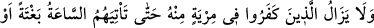
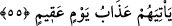
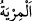
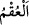
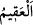
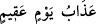

Hidâyet, insandan ve tabîatından değil, Allah’tan ve O’nun teyidindendir. Allah’ın
nefsiyle ve tabiatıyla baş başa bıraktığı kimseden, sâlihler düzeltmek için çarelere
başvursa bile şüphe, küfür ve dalâlet ebediyyen zâil olmaz.
Molla Câmî der ki:
Yer, Karun’u yuttuğu gibi birini yutacak olsa
Onu ne Musa çıkarabilir ne de Harun
Feleğin muhalefeti ile mizacı bozulanı
Attarların iyileştirmesi mümkün değildir
Şeyh Sa‘dî de şöyle der:
Aynanın kiri, pası temizlenebilir
Ancak taştan ayna elde edilemez
Şu halde akıllı kimseye gereken, ölüm gelene kadar apaçık olan Kur’ân emirlerine
teslim olmak, nefs-i emmârenin ıslahına çalışmaktır. Çünkü nefis çok sihirbaz, çok
hilekâr, çok sahtekâr ve çok aldatıcıdır.
Şeyh Mağribî der ki:
Babil kuyusuna bir melek düşebilir
Bizim Babil kuyumuzun dibinde ne sihirler vardır
55. İnkâr edenler, kendilerine o saat ansızın gelinceye, yahut da (kendileri için
hayır yönünden) kısır bir günün azabı gelinceye kadar onun (Kur’an) hakkında hep
şüphe içindedirler.
“İnkâr edenler, kendilerine o sâat” kıyâmet “ansızın” onlar gaflet üzere iken
“gelinceye, yahut da kısır bir günün azâbı gelinceye kadar onun” Kur’an “hakkında
hep şüphe” şek ve mücâdele “içindedirler.”
Râğıb der ki: “
” bir işte tereddüd etmektir. Şekten daha özeldir.”
“
” kelimesinin asıl anlamı, iz ve tesiri kabule mâni olan kuruluk demektir.
Kadınlardan “
”, erkeğin suyunu kabul etmeyendir.
“
” kendisinden başka günün olmadığı bir günün azâbı, demektir. Sanki her
gün kendisinden sonraki günleri doğurur. Kendisinden sonra gün olmayan gün ise kısır